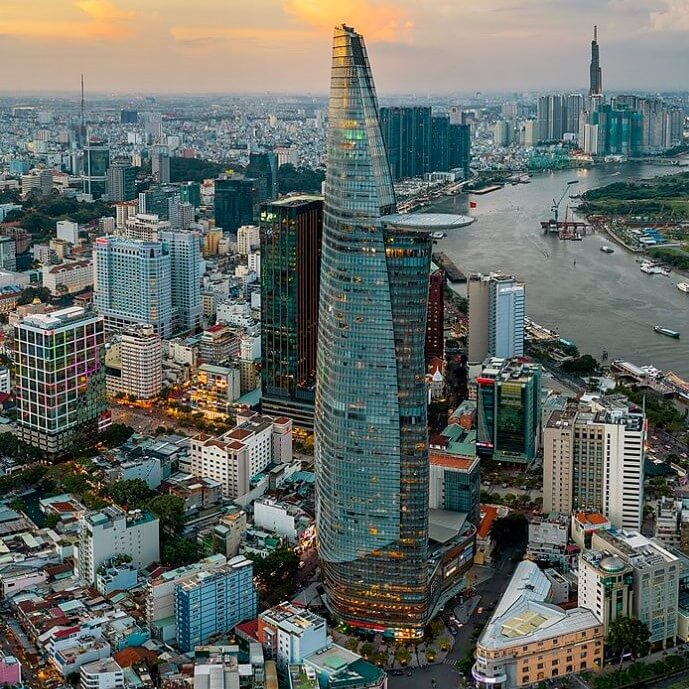

Kyiv, Ukraine
Artis
Natalia Dolgushina, produser konten

Kyiv (atau Kiev), ibu kota Ukraina, adalah kota besar yang terletak di tepi
sungai Dnipro. Tentu saja, tidak ada orang waras yang akan berenang di sungai,
kecuali mereka dibesarkan di sini, dalam hal ini mereka mungkin pernah
mencobanya. Musim panas di sini panas, dan musim dinginnya berangin,
tetapi musim gugur dan musim semi benar-benar menakjubkan.
Kota itu sendiri merupakan campuran arsitektur prarevolusi, pascaperang,
dan soviet, semuanya ditaburi dengan balkon yang dimodifikasi.
Jika Anda berada di tepi kanan sungai Dnipro, pemandangannya sulit untuk
dilalui oleh orang-orang yang bersepeda dan yang memakai sepatu hak tinggi.
Tepi kiri dianggap jauh kurang menarik dan bergengsi, bahkan oleh orang-orang
yang tinggal di pinggiran paling kanan.
Beli karya seni ini sebagai NFT
Criccieth, Wales
Artis
Steffan Warren, editor utama

Reruntuhan abad pertengahan Kastel Criccieth menghadap ke kota di bawah batu
yang menjorok ke laut. Menurut perkiraan, kastel itu dibangun oleh Llywelyn
yang Agung pada abad ke-13. Sekitar 900 tahun kemudian, Mutiara Wales di
Pesisir Snowdonia yang memiliki gayanya sendiri telah menjadi tujuan wisata
populer selama bulan-bulan musim panas.
Berjalan kaki singkat dari kastel, Anda dapat menikmati es krim terbaik
dunia di Cadwalader, yang bahan rahasianya dikabarkan berasal dari rumput
laut lokal. Klaim lain mengenai ketenarannya adalah kenyataan bahwa Criccieth
memenangkan penghargaan Wales in Bloom selama lima tahun berturut-turut untuk
pajangan bunga spektakuler di sekitar kota. Criccieth juga merupakan rumah bagi
David Lloyd George, satu-satunya orang Wales yang pernah memegang jabatan
sebagai Perdana Menteri Inggris.
Beli karya seni ini sebagai NFT
Berea, Amerika Serikat
Artis
Travis Turner, penulis dan editor

Berea adalah kota kecil yang terletak di bagian tengah Kentucky.
Kota ini dikelilingi oleh hutan dan pedesaan yang indah.
Kota ini dikenal sebagai ibu kota seni dan kerajinan negara bagian, dan
pengunjung akan menemukan banyak kesempatan berbelanja: toko dengan
perhiasan buatan tangan, lilin, barang kayu, galeri, studio kaca,
dan banyak lagi. Kota ini mengadakan festival tahunan untuk merayakan
"roti sendok", hidangan lokal yang dibuat dengan roti jagung dan
disajikan dengan sendok kayu.
Namun, kota ini mungkin paling dikenal karena perguruan tinggi lokalnya.
Berea College didirikan pada tahun 1855 dan merupakan perguruan tinggi
pertama di selatan yang terintegrasi secara rasial, serta yang pertama
dalam hal pendidikan bersama. Uniknya, tidak ada biaya kuliah karena setiap
siswanya menerima beasiswa penuh.
Beli karya seni ini sebagai NFT
Muramvya, Burundi
Artis
Grevisse Kenguruka, editor teknis

Muramvya adalah salah satu dari 18 provinsi Burundi.
Di era kerajaan, Muramvya adalah ibu kota kerajaan dan pada tahun 2007,
karena lanskap budaya dan alamnya, Muramvya ditambahkan ke Daftar Tentatif
Warisan Dunia UNESCO. Kota ini berada di pusat Burundi, di antara ibu kota
politik dan ekonomi negara Burundi.
Cuaca sedikit dingin di malam hari, tetapi pada siang hari, Anda akan berpikir
Anda berada di surga. Pada ketinggian 2.665 meter (8.743 kaki) di atas permukaan
laut, Gunung Teza adalah salah satu tempat terdingin di provinsi ini.
Namun, angin sejuk memungkinkannya menjadi salah satu perkebunan teh dan kopi
terbesar di negara ini, yang menjadi sumber ekspor Burundi terbesar.
Taman Nasional Kibira, salah satu suaka margasatwa kera terbesar, terletak di
empat provinsi, termasuk Muramvya. Taman Nasional ini terletak di puncak
pegunungan yang indah di Congo-Nile Divide, dengan ketinggian berkisar
antara 1.550 dan 2.660 meter. Taman Nasional ini dipenuhi dengan tumbuh-tumbuhan
yang indah, dan sumber bagi berbagai sungai dan aliran yang menyediakan air
di seluruh negeri.
Beli karya seni ini sebagai NFT
Ho Chi Minh City, Vietnam
Artis
Mike Tjahyono, some bloke

Kota Ho Chi Minh terletak pada 10°45' LU, 106°40' BT (10.75, 106.667)
di wilayah tenggara Vietnam, 1.760 km selatan dari Hanoi. Ketinggian rata-ratanya
adalah 19 meter di atas permukaan laut. Kota ini berbatasan dengan Provinsi Tay Ninh
dan Binh Duong di utara, Provinsi Dong Nai dan Ba Ria - Vung Tau di sebelah timur,
Provinsi Long An di barat dan Laut Timur di selatan dengan pantai yang panjangnya 20 km.
Luas kotanya 2.095 km² (0.63% dari daratan Vietnam), membentang hingga ke Cu Chi
(20 km dari perbatasan Kamboja), dan di bagian bawah hingga ke Can Gio di pantai Laut Timur.
Jarak dari titik paling utara (Komun Phu My Hung, Distrik Cu Chi) ke titik yang paling selatan
(Komun Long Hoa, Distrik Can Gio) adalah 120 km, dan dari titik paling timur
(Ward Long Binh, Distrik Sembilan) hingga ke titik paling barat
(Komun Binh Chanh, Distrik Binh Chanh) adalah 46 km.
Situs yang paling menonjol di pusat kota adalah Istana Reunifikasi, Balai Kota,
Teater Kota (juga dikenal sebagai Gedung Opera), Kantor Pos Kota, Kantor Bank Negara,
Pengadilan Rakyat Kota, dan Katedral Notre-Dame yang dibangun antara tahun 1863 dan 1880.
Beberapa hotel bersejarah termasuk Hotel Majestic, yang berasal dari era kolonial Prancis,
dan hotel Rex dan Caravelle, keduanya merupakan bekas tempat bergaul pasukan Amerika dan
jurnalis perang pada tahun 1960-an & 70-an.
Beli karya seni ini sebagai NFT